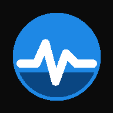

Heart Rate Alert
--
Contact: niet gedetecteerd
Screen wakelock: niet actief
Softwareversie: 2026.08.05-v39
Nieuwe softwareversie beschikbaar.
Werk bij wanneer de hartslagmeting veilig onderbroken kan worden.
Werk bij wanneer de hartslagmeting veilig onderbroken kan worden.
Laatste opslag: --
Opslag: controleren...
Bridge: niet gecontroleerd